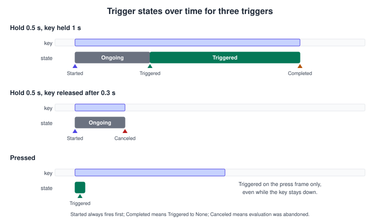
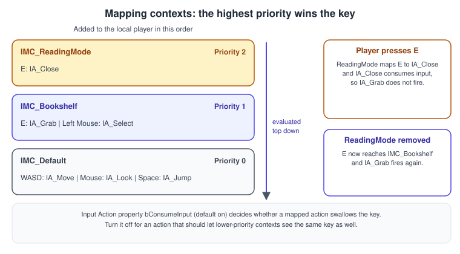
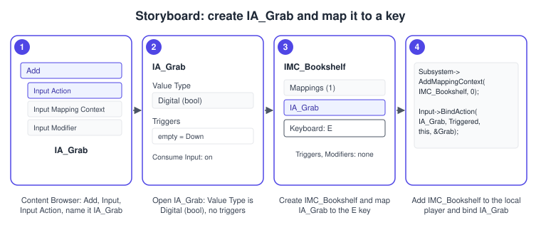
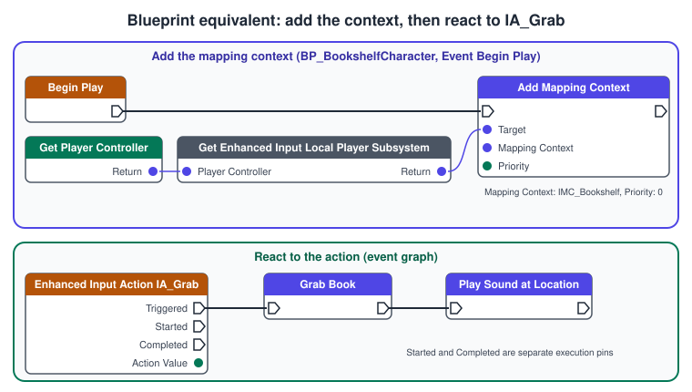

Enhanced Input
|
This content was generated with the assistance of AI and should be verified against the official documentation before being relied on in production. |
Input is where a game meets its player, and it is the part of a project most often rebuilt late: a gamepad is added, keys are rebound, a reading mode needs different keys than walking. Enhanced Input is Unreal’s input system built for that: instead of hard-wiring keys to code, the project describes what the player can do as assets (Input Actions), which keys do it in which situation as other assets (Input Mapping Contexts), and lets modifiers and triggers shape the raw signals in between.
The facts were checked in November 2026 against the Unreal Engine 5.8 documentation (5.8 was released on 2026-06-17; the latest hotfix at the time of writing is 5.8.4). Enhanced Input is a plugin that is enabled by default in current projects and works on every platform Unreal supports (keyboard and mouse, gamepads, touch and XR controllers). The C++ examples need the module dependency shown below. The running example is the Bookshelf: an IA_Grab action in the context IMC_Bookshelf that lets ABookshelfCharacter pull a book (see bookshelf.glb for the shared model). The character class is in Gameplay Framework; the engine-neutral theory of input devices and mapping is in Physics, Audio and Input Basics.
The pipeline from key to event
The stages, in order:
-
A physical input (a key, a thumbstick axis, a touch point) produces a raw value every tick it is active.
-
An Input Mapping Context decides which Input Action each physical input belongs to. The context that was added with the highest priority wins when several map the same key.
-
Modifiers preprocess the raw value: invert it, scale it, apply a dead zone, reorder its axes.
-
Triggers decide whether the processed value activates the action this tick: on press, on release, after a hold, on a double tap.
-
The Input Action carries the value (of its declared type) and the trigger state, and raises events that the game code or a Blueprint reacts to.
Modifiers and triggers can be placed on a single key mapping (specific to one device and key) or on the Input Action itself (shared by every mapping of the action). The action-level modifiers are applied to the final action value.
Input Actions
An Input Action is a data asset that links the input system to game code. It replaces the legacy Action and Axis mapping names. Create one in the Content Browser with Add > Input > Input Action. Its properties:
| Property | Meaning |
|---|---|
Value Type |
What the action returns: Digital (bool) for on and off, Axis1D (float), Axis2D ( |
Triggers |
Trigger qualifiers that apply to the whole action (see below). With none, the input fires every tick that it is active. |
Modifiers |
Modifiers applied to the final action value. |
Consume Input ( |
Whether the action swallows the keys mapped to it (true by default) or lets them pass through to lower-priority bound actions. |
Trigger When Paused ( |
Whether the action may fire while the game is paused. |
Reserve All Mappings ( |
The action’s mappings should not be overridden automatically by higher-priority contexts; a user must remove the mapping first. |
Accumulation Behavior |
How the action’s value is calculated when several key mappings feed the same action at once (for example W and the gamepad stick): the enum |
Description |
A localized text describing the action. |
Player Mappable Key Settings |
Present when players may rebind the action; see the section on user settings. |
Source: Epic: Enhanced Input and Epic API: UInputAction
Trigger events
An action reports its state with an ETriggerEvent. Epic describes the values this way:
| Event | Meaning |
|---|---|
|
No significant trigger state changes occurred and there are no active device inputs. |
|
An event has begun trigger evaluation. |
|
Triggering is still being processed (a hold that has not reached its time yet). |
|
Triggering occurred after one or more processing ticks. This is the event bound most often. |
|
Triggering has been canceled (a hold released too early). |
|
The state has transitioned from |

Source: Epic API: ETriggerEvent
Input Mapping Contexts
An Input Mapping Context (IMC) is a collection of Input Actions that represents a player state: walking, driving, reading a book, using a menu. Inside the asset, each action lists the physical inputs bound to it, and each of those carries its own modifiers and triggers. Create one with Add > Input > Input Mapping Context.
Contexts are added to and removed from a local player at run time, each with an integer priority. Higher values take priority over lower values: when two active contexts map the same key, the higher one wins, and (with Consume Input on) the lower mapping does not see the key. Epic’s advice is to keep mutually exclusive contexts for mutually exclusive states (driving versus on foot), so that input never collides.

Contexts are registered per local player, not globally. The Enhanced Input Local Player Subsystem is the object that adds them; in C++ you reach it through the ULocalPlayer. The UEnhancedInputWorldSubsystem is the corresponding world-level subsystem. Adding a context while keys are held ignores those keys until they are released by default, so that a held key does not immediately trigger the new context; check the options of AddMappingContext when this matters.
Platform-specific input uses the Enhanced Input Platform Data asset (a Blueprint of UEnhancedInputPlatformData), which contains a mapping-context redirect map that swaps contexts per platform when mappings rebuild. Assign it under Project Settings > Enhanced Input > Platform Settings > Input Data; the settings are written to each platform’s DefaultInput.ini and can be hotfixed.
Source: Epic: Enhanced Input and Epic API: UInputMappingContext
Modifiers
A modifier changes the raw value before triggers see it. The standard modifier classes in the plugin are:
| Class (editor name) | What it does |
|---|---|
|
Inverts the value per axis. Used for the left and down keys of a WASD layout and for an inverted mouse Y. |
|
Reorders the axes (for example YXZ), so a one-axis key such as W can feed the Y axis of a two-axis action. |
|
Ignores small values near zero, including a radial dead zone for thumbsticks. |
|
Multiplies the value per axis (sensitivity). |
|
Multiplies by the frame time, for values that must be per second. |
|
Smooth the value over several frames. |
|
Reshape the value with an exponent or with a curve asset. |
|
Scales the value by the field of view. |
|
Converts axial input to world space. |
A WASD key set for an Axis2D action IA_Move is the textbook example. Every key feeds one action, each with a different modifier combination:
| Key | Modifiers on the mapping | Value delivered to IA_Move |
|---|---|---|
W |
Swizzle Input Axis Values (YXZ) |
(0, 1) |
S |
Swizzle Input Axis Values (YXZ), then Negate |
(0, -1) |
D |
none |
(1, 0) |
A |
Negate |
(-1, 0) |
Gamepad left stick |
Dead Zone |
(x, y) in -1 to 1 |
A custom modifier subclasses UInputModifier and overrides ModifyRaw_Implementation; it can read the owning UEnhancedPlayerInput and therefore game state. The one below scales look input by a sensitivity that lives in the Bookshelf settings.
// InputModifierLookSensitivity.h
#pragma once
#include "CoreMinimal.h"
#include "InputModifiers.h"
#include "InputModifierLookSensitivity.generated.h"
/** Scales look input by a sensitivity that the player can change at run time. */
UCLASS(meta = (DisplayName = "Bookshelf Look Sensitivity"))
class BOOKSHELF_API UInputModifierLookSensitivity : public UInputModifier
{
GENERATED_BODY()
public:
/** Multiplier applied to the value; 1 leaves it unchanged. */
UPROPERTY(EditAnywhere, BlueprintReadWrite, Category = "Settings", meta = (ClampMin = "0.0"))
float Sensitivity = 1.0f;
protected:
virtual FInputActionValue ModifyRaw_Implementation(const UEnhancedPlayerInput* PlayerInput,
FInputActionValue CurrentValue, float DeltaTime) override;
};
// InputModifierLookSensitivity.cpp
#include "InputModifierLookSensitivity.h"
FInputActionValue UInputModifierLookSensitivity::ModifyRaw_Implementation(
const UEnhancedPlayerInput* PlayerInput, FInputActionValue CurrentValue, float DeltaTime)
{
// Keep the value type (bool, 1D, 2D or 3D) and scale every axis.
return FInputActionValue(CurrentValue.GetValueType(), CurrentValue.Get<FVector>() * Sensitivity);
}Source: Epic: Enhanced Input and Epic API: UInputModifier
Triggers
A trigger decides whether processed input activates the action this tick. Their results are None, Ongoing or Triggered. By default, with no trigger, input fires every tick that it is active. Triggers have three types:
-
Explicit triggers succeed on their own (any one success is enough).
-
Implicit triggers must all succeed (for example the second key of a chord).
-
Blocker triggers force the action to fail whenever they succeed.
| Class (editor name) | Behaviour |
|---|---|
|
Fires every tick while the input is above the actuation threshold. This is the behaviour of an action with no trigger. |
|
Fires once, when the input passes the actuation threshold. |
|
Fires when the input drops back below the threshold. |
|
Fires after the input has been held for |
|
Fires when the input is released after being held long enough. |
|
Fires when the input is pressed and released quickly. |
|
Fires on a repeated tap, such as a double tap. |
|
Fires repeatedly at an interval while the input is held. |
|
Fires only while another Input Action is active; an implicit trigger for modifier-key combinations. |
|
A blocker used with chords. |
|
The base class for timed triggers. It does not return |
A custom trigger extends the base trigger class (or the timed base) and overrides its state update; the engine’s own UInputTriggerHold is the reference implementation (GetSupportedTriggerEvents, UpdateState_Implementation).
Source: Epic: Enhanced Input and Epic API: EnhancedInput plugin
Setting it up in C++
Add the module to the game module’s Build.cs (see Project Structure and Modules):
// Bookshelf.Build.cs (excerpt)
PublicDependencyModuleNames.AddRange(new string[]
{
"Core", "CoreUObject", "Engine", "InputCore", "EnhancedInput"
});Enhanced Input is enabled in the project’s plugins by default. The player-input class and the input-component class are chosen in Project Settings > Input > Default Classes (EnhancedPlayerInput and EnhancedInputComponent), or in DefaultInput.ini:
[/Script/Engine.InputSettings]
DefaultPlayerInputClass=/Script/EnhancedInput.EnhancedPlayerInput
DefaultInputComponentClass=/Script/EnhancedInput.EnhancedInputComponentThe character holds the assets as UPROPERTY references, so a designer assigns them in BP_BookshelfCharacter and the code never contains an asset path. It adds the context to the local player when a controller takes over and binds one callback per event it cares about. The callback receives an FInputActionValue (or an FInputActionInstance that also exposes the action and the elapsed time); Value.Get<T>() reads it as bool, float, FVector2D or FVector.
// BookshelfCharacter.h (excerpt)
#pragma once
#include "CoreMinimal.h"
#include "GameFramework/Character.h"
#include "BookshelfCharacter.generated.h"
class UInputAction;
class UInputMappingContext;
struct FInputActionValue;
UCLASS()
class BOOKSHELF_API ABookshelfCharacter : public ACharacter
{
GENERATED_BODY()
public:
/** Adds the reading context (priority 2) while a book is open, removes it afterwards. */
void EnterReadingMode();
void ExitReadingMode();
protected:
virtual void NotifyControllerChanged() override;
virtual void SetupPlayerInputComponent(UInputComponent* PlayerInputComponent) override;
void Move(const FInputActionValue& Value);
void Look(const FInputActionValue& Value);
void Grab(const FInputActionValue& Value);
UPROPERTY(EditDefaultsOnly, Category = "Input")
TObjectPtr<UInputMappingContext> BookshelfContext;
UPROPERTY(EditDefaultsOnly, Category = "Input")
TObjectPtr<UInputMappingContext> ReadingContext;
UPROPERTY(EditDefaultsOnly, Category = "Input")
TObjectPtr<UInputAction> MoveAction;
UPROPERTY(EditDefaultsOnly, Category = "Input")
TObjectPtr<UInputAction> LookAction;
UPROPERTY(EditDefaultsOnly, Category = "Input")
TObjectPtr<UInputAction> JumpAction;
UPROPERTY(EditDefaultsOnly, Category = "Input")
TObjectPtr<UInputAction> GrabAction;
private:
UEnhancedInputLocalPlayerSubsystem* GetInputSubsystem() const;
};// BookshelfCharacter.cpp (excerpt)
#include "BookshelfCharacter.h"
#include "EnhancedInputComponent.h"
#include "EnhancedInputSubsystems.h"
#include "InputActionValue.h"
#include "InputMappingContext.h"
#include "GameFramework/Controller.h"
#include "GameFramework/PlayerController.h"
#include "Engine/LocalPlayer.h"
#include "Bookshelf.h"
UEnhancedInputLocalPlayerSubsystem* ABookshelfCharacter::GetInputSubsystem() const
{
if (const APlayerController* PlayerController = Cast<APlayerController>(GetController()))
{
return ULocalPlayer::GetSubsystem<UEnhancedInputLocalPlayerSubsystem>(PlayerController->GetLocalPlayer());
}
return nullptr;
}
void ABookshelfCharacter::NotifyControllerChanged()
{
Super::NotifyControllerChanged();
// Runs on the owning client when a controller possesses the pawn.
if (UEnhancedInputLocalPlayerSubsystem* Subsystem = GetInputSubsystem())
{
if (BookshelfContext)
{
Subsystem->AddMappingContext(BookshelfContext, 0);
}
}
}
void ABookshelfCharacter::SetupPlayerInputComponent(UInputComponent* PlayerInputComponent)
{
Super::SetupPlayerInputComponent(PlayerInputComponent);
UEnhancedInputComponent* EnhancedInput = Cast<UEnhancedInputComponent>(PlayerInputComponent);
if (!ensureMsgf(EnhancedInput, TEXT("Set the default input component class to EnhancedInputComponent")))
{
return;
}
EnhancedInput->BindAction(MoveAction, ETriggerEvent::Triggered, this, &ABookshelfCharacter::Move);
EnhancedInput->BindAction(LookAction, ETriggerEvent::Triggered, this, &ABookshelfCharacter::Look);
EnhancedInput->BindAction(JumpAction, ETriggerEvent::Started, this, &ACharacter::Jump);
EnhancedInput->BindAction(JumpAction, ETriggerEvent::Completed, this, &ACharacter::StopJumping);
// Started fires once per press, even if the action has no Pressed trigger.
EnhancedInput->BindAction(GrabAction, ETriggerEvent::Started, this, &ABookshelfCharacter::Grab);
}
void ABookshelfCharacter::Move(const FInputActionValue& Value)
{
const FVector2D Axis = Value.Get<FVector2D>();
if (Controller == nullptr)
{
return;
}
const FRotator YawRotation(0.0, Controller->GetControlRotation().Yaw, 0.0);
AddMovementInput(FRotationMatrix(YawRotation).GetUnitAxis(EAxis::X), Axis.Y);
AddMovementInput(FRotationMatrix(YawRotation).GetUnitAxis(EAxis::Y), Axis.X);
}
void ABookshelfCharacter::Look(const FInputActionValue& Value)
{
const FVector2D Axis = Value.Get<FVector2D>();
AddControllerYawInput(Axis.X);
AddControllerPitchInput(Axis.Y);
}
void ABookshelfCharacter::Grab(const FInputActionValue& Value)
{
UE_LOG(LogBookshelf, Log, TEXT("Grab pressed"));
TryInteract();
}
void ABookshelfCharacter::EnterReadingMode()
{
if (UEnhancedInputLocalPlayerSubsystem* Subsystem = GetInputSubsystem())
{
if (ReadingContext)
{
Subsystem->AddMappingContext(ReadingContext, 2);
}
}
}
void ABookshelfCharacter::ExitReadingMode()
{
if (UEnhancedInputLocalPlayerSubsystem* Subsystem = GetInputSubsystem())
{
if (ReadingContext)
{
Subsystem->RemoveMappingContext(ReadingContext);
}
}
}BindAction has several overloads. The common one takes the action, an ETriggerEvent, the object and a member function pointer; others take a FName function name for a UFUNCTION, extra payload arguments, or a handler that receives the FInputActionInstance. BindActionInstanceLambda binds a lambda that receives the action instance. Every binding returns a binding object, and RemoveBindingByHandle removes one by its handle. BindActionValue binds only to read an action’s current value (GetBoundActionValue), which suits an action you poll in Tick rather than react to.
Procedure: create IA_Grab and its context
-
In the Content Browser choose Add > Input > Input Action and name it
IA_Grab. -
Open
IA_Grab, leave Value Type at Digital (bool) and leave Triggers empty (or add Pressed, so that the action fires once per press). -
Create an Input Mapping Context named
IMC_Bookshelf. Add a mapping, chooseIA_Graband bind the keyboard keyE(and a gamepad button, if you like). -
Open
BP_BookshelfCharacterand, in Class Defaults > Input, assignIMC_BookshelfandIA_Grab. At run time the character adds the context inNotifyControllerChangedand binds the action inSetupPlayerInputComponent. -
Press Play and check the binding with
showdebug enhancedinput(see below).

Source: Epic: Enhanced Input
The Blueprint equivalent
In a Blueprint class, the Add Mapping Context node (with the Enhanced Input Local Player Subsystem from the player controller) registers the context, and the action appears as an event node that exposes one execution pin per trigger event. Right-click the event graph and search for the action by name.

Player-mappable keys and user settings
A player who rebinds keys needs the bindings stored somewhere. An Input Action that players may rebind has Player Mappable Key Settings with a stable Name and a display name; the project enables user settings in the Enhanced Input developer settings (bEnableUserSettings, with the UserSettingsClass to use). The UEnhancedInputUserSettings object then maps and unmaps keys per profile and provides the functions a settings screen needs: MapPlayerKey, UnMapPlayerKey, ResetAllPlayerKeysInRow, FindCurrentMappingForSlot, FindMappingsInRow, SetActiveKeyProfile and GetCurrentKeyProfile. It also provides a registration point for mapping contexts from plugins that are not loaded yet, such as Game Feature plugins. Older functions on the subsystem, such as AddPlayerMappedKeyInSlot, are deprecated in favor of the user settings object.
// Rebinding Grab to the F key from a settings screen (excerpt)
void ABookshelfCharacter::RebindGrabToF()
{
UEnhancedInputLocalPlayerSubsystem* Subsystem = GetInputSubsystem();
UEnhancedInputUserSettings* Settings = Subsystem ? Subsystem->GetUserSettings() : nullptr;
if (!Settings)
{
return;
}
FMapPlayerKeyArgs Args;
Args.MappingName = TEXT("Grab"); // the Name in IA_Grab's Player Mappable Key Settings
Args.Slot = EPlayerMappableKeySlot::First;
Args.NewKey = EKeys::F;
FGameplayTagContainer FailureReason;
Settings->MapPlayerKey(Args, FailureReason);
Settings->SaveSettings();
}A Player Mappable Input Config (PMI) is the older, simpler idea: a preset that bundles mapping contexts and their priorities so that they can be added together, such as default and southpaw aiming layouts. It remains useful for presets; per-player rebinding belongs in the user settings.
CommonUI and the 5.8 unification
Menus have their own input needs (navigate, accept, back) that must coexist with gameplay keys. CommonUI has its own input layer, Common Input, and until recently the two systems needed duplicate data. The Unreal Engine 5.8 release notes announce that Enhanced Input and Common Input/UI were unified: cross-platform input handling is simpler, duplicate data assets are no longer needed, debugging is more straightforward, and the update brings more reliable event processing, better widget binding behavior, expanded virtual key support and fixes for trigger edge cases. It also adds an Input Debugger for Enhanced Input UI and more extensibility.
Epic’s CommonUI-with-Enhanced-Input page describes the integration points. Enable it under Project Settings > Game > Common Input Settings > Enable Enhanced Input Support. Input Actions then replace data table rows as the input source of CommonButtonBase, CommonActionWidget (which can show a key prompt for a gameplay action) and Common UI Input Data (the default navigation actions). Generic actions, such as Accept and Back, are bound to UI elements and do not broadcast their Enhanced Input events, so that a button does not fire gameplay by accident. An Input Action points to its metadata (a class implementing ICommonMappingContextMetadataInterface, for example UCommonMappingContextMetadata) through its Player Mappable Key Settings. Activatable Widgets can name mapping contexts to apply on activation and remove on deactivation. The page itself still carries a cautionary note from the UE 5.2 era about limited testing, so read it together with the 5.8 release notes and test the integration on your target platforms before relying on it. The widgets themselves are covered in UMG, Slate and CommonUI.
Debugging and testing input
-
showdebug enhancedinputshows the action and axis mappings in use;showdebug devicesshows the connected input devices. -
Input.+key Gamepad_FaceButton_Bottom X=1 Y=0starts simulated input andInput.-key Gamepad_FaceButton_Bottomstops it. Key names areFKeynames, which the key picker in the mapping context shows. -
UEnhancedPlayerInput::InjectInputForActioninjects a value for an action from code, which makes input testable in automation tests (see Testing and Automation). -
The 5.8 Input Debugger (Enhanced Input UI) is the tool to watch an action’s state, value and the contexts in play; check which actions currently consume a key before assuming a binding is missing.
Source: Epic: Enhanced Input
Where input goes: the stack
Input reaches game code through input components arranged in a stack, and a component that handles an input consumes it. Epic’s input overview gives the order of the stack, highest priority first: Actors with Accepts Input enabled (most recently enabled first), then controllers, then level script, then pawns. Enhanced Input is a different layer than this stack: the mapping context priority decides which action a key means, and the input component stack decides which object receives the action.
Source: Epic: Input Overview
Migrating from BindAction and BindAxis
Enhanced Input is backward compatible: legacy Action and Axis mappings keep working, so a project can move over piece by piece. Epic’s input overview says that Enhanced Input replaces the legacy bindings and that a project using it should bind only Input Actions. The translation is mechanical:
| Legacy | Enhanced Input |
|---|---|
Project Settings action mapping ( |
An |
|
|
Axis mapping ( |
One Axis2D action |
Axis |
A Scalar modifier, or Negate for -1. |
|
|
Platform-specific mappings in settings |
Separate mapping contexts, swapped per platform with Enhanced Input Platform Data. |
Remapping through |
|
Enhanced Input became the default in UE 5.1: the 5.1 release notes enable the plugin by default and describe the automatic upgrade of projects that use the default input classes (the console variable EnhancedInput.bEnableAutoUpgrade disables it).
Common mistakes
-
Binding
Triggeredon an action with no trigger and expecting one call. With no trigger the action fires every tick the key is down, so a grab runs sixty times a second. BindStarted, or add aPressedtrigger. -
Forgetting
AddMappingContext. The action asset exists, the bindings exist, nothing fires. Add the context to the local player, and check it withshowdebug enhancedinput. -
Adding the context in
BeginPlayof a pawn that has no controller yet. On a client the controller may arrive later; useNotifyControllerChangedorPawnClientRestart. -
Casting the input component without checking.
Cast<UEnhancedInputComponent>returnsnullptrwhen the project still uses the legacy component class; the project’s default input component class must beEnhancedInputComponent. -
Missing
EnhancedInputinBuild.cs. The headers are found but the linker fails onUEnhancedInputComponent. -
A higher-priority context swallowing a key. A context with
Consume Inputon hides the same key from lower contexts; remove the context when the mode ends, or turn Consume Input off for actions that should share keys. -
Reading a value as the wrong type.
Value.Get<FVector2D>()on a Digital action returns a vector built from the bool; declare the action’s Value Type to match what the code reads. -
Inverted look or reversed movement. The mapping needs Negate or Swizzle; fix the modifier, not the code.
-
Hard-coding keys in C++ for gameplay. Hard-coded
EKeysbypass contexts, platform data and rebinding. -
Mixing legacy
BindAxisand Enhanced Input in one project by accident. A mixed project binds the same key twice. Pick one per action. -
Using Enhanced Input for UI navigation without the CommonUI integration. Menus then react to gameplay keys; use the generic actions of the CommonUI integration.
Performance notes
-
An action is evaluated every tick it has active inputs. The cost is small, but an action with many mappings, smoothing modifiers and triggers is evaluated every tick on every local player; keep contexts lean and remove contexts that no longer apply.
-
A callback runs on the game thread; keep it to setting state and let
Tickor a timer do the heavy work.StartedandCompletedcallbacks run once,Triggeredruns every tick that the action is triggered. -
A stateful trigger such as
Holdcosts an instance per mapping; reuse actions rather than creating many near-identical ones. -
Adding and removing contexts rebuilds the control mappings for the local player at the end of the frame; do it on state changes (entering and leaving reading mode), not every frame.
-
Use
Startedinstead of pollingGetBoundActionValueinTickfor buttons; poll only for continuous values such as a trigger pressure.
What changed recently
| Version | Change |
|---|---|
UE 5.1 (2022) |
The Enhanced Input plugin is enabled by default, and projects that use the default input classes are upgraded automatically (the console variable |
UE 5.3 and later |
Player-mappable keys moved to |
UE 5.8 (2026) |
Enhanced Input and Common Input/UI are unified, which removes the need for duplicate data assets and brings more reliable event processing, better widget binding behavior, expanded virtual key support and trigger edge-case fixes. An Input Debugger for Enhanced Input UI and added extensibility arrive. PICO controller bindings were configured for Input Mapping Contexts. |
Where the books are outdated
Three of the books bind input, and all of them predate Enhanced Input as the default: Blueprints Visual Scripting for Unreal Engine (second edition, Marcos Romero and Brenden Sewell, Packt, August 2019; chapter 6; Unreal Engine 4.20 to 4.22), Unreal Engine 4.X By Example (Benjamin Carnall, Packt, July 2016; chapter 5; Unreal Engine 4.10 and 4.11) and Unreal Engine 5 Game Development with C++ Scripting (Zhenyu George Li and E. Wyn Roberts, Packt, August 2023; chapters 4 and 7; Unreal Engine 5.0 and Visual Studio 2022).
| Book and chapter | What the book shows | What is current in UE 5.8 |
|---|---|---|
BPV ch. 6 |
Input events in Blueprints from the project’s legacy Action and Axis mappings |
Enhanced Input Actions and mapping contexts, with the action as an event node. The legacy mappings still work but a new project binds Input Actions only. |
CAR ch. 5 to 9 |
|
|
LIR ch. 4 and 7 |
The legacy |
Enhanced Input. The book targets UE 5.0, before the plugin became the default in 5.1 and long before the 5.8 CommonUI unification and the Input Debugger. |
See also
-
Physics, Audio and Input Basics: the engine-neutral theory of input devices, polling versus events and action mapping.
-
Gameplay Framework: the controller and pawn that own input.
-
Blueprint Communication:
TryInteractand the interface thatGrabcalls. -
C++ and Blueprints Together: exposing the input assets to a Blueprint subclass.
-
Unreal C++ Idioms: delegates and logging used in the callbacks.
-
UMG, Slate and CommonUI: CommonUI widgets and activatable widgets.
-
Project Structure and Modules: the
Build.csthat listsEnhancedInput. -
Unity: Input System: the closest Unity counterpart (actions, maps, processors and interactions).
-
Unity: 3D Physics: the picking example that
IA_Grabcorresponds to.